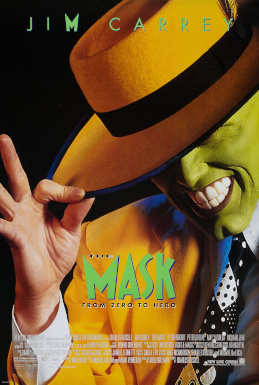
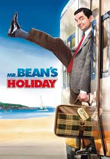
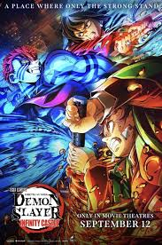
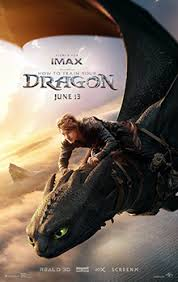

The comedy film is a film genre that emphasizes humor. These films are designed to amuse audiences and make them laugh.Films in this genre typically have a happy ending, with dark comedy being an exception to this rule.


The most common fantasy subgenres depicted in movies are high fantasy and sword and sorcery.Both categories typically employ quasi-medieval settings, wizards, magical creatures and other elements commonly associated with fantasy stories.

